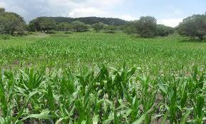
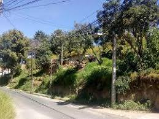
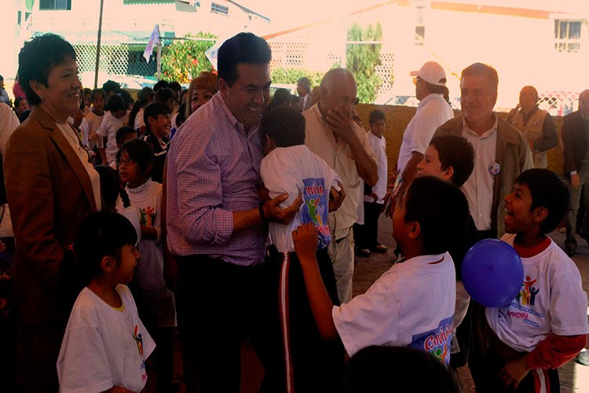
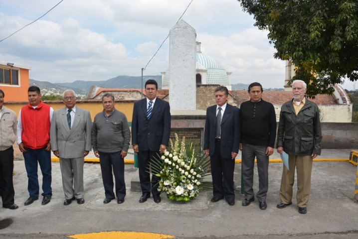

GALERIA
Flora:
Su tipo de flora es como el de un pequeño tropico, ya que todo lo que es sembrado aquí se da, además de que la tierra es buena"


Actividades

"Conmemora Ayuntamiento capitalino a precursores revolucionarios del pueblo de Tepehitec."
